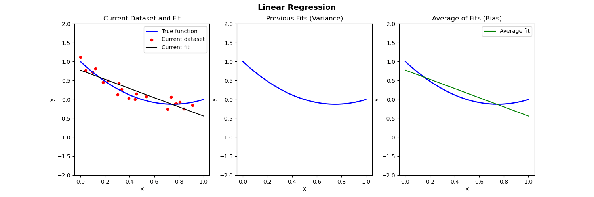
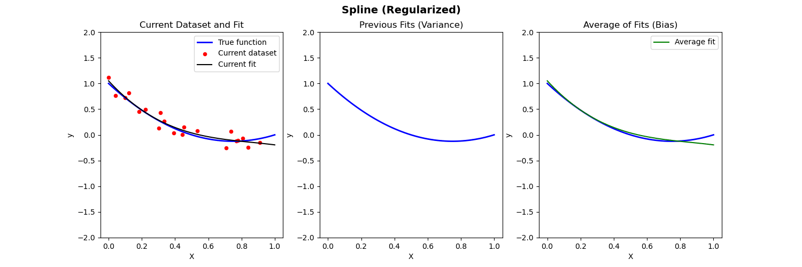
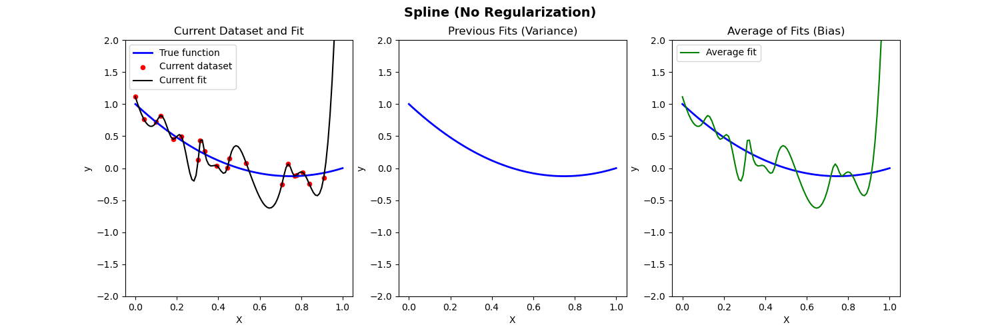
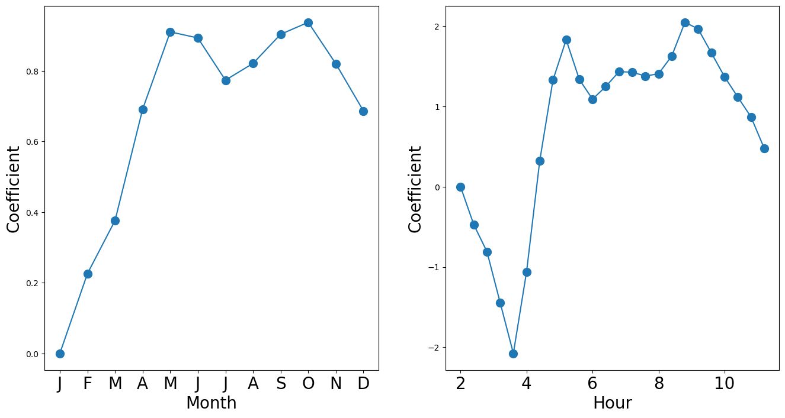

import numpy as np
import pandas as pd
from matplotlib.pyplot import subplots
import statsmodels.api as sm
from ISLP import load_data
from ISLP.models import (ModelSpec as MS,
summarize)Lecture 5a - Generalized Linear Models
Bias-Variance Illustration
Suppose we have fit a model \widehat{f}(x) to some training data \{{X}_i,{Y}_i\}_{i=1}^n. Let (x_0, y_0) be a test observation from the population. The true model is Y=f(X)+\varepsilon (where f(x)=\mathbb{E}[Y|X=x]). Then the MSE of the test data is: \begin{align*} \mathbb{E}[(y_0-\widehat{f}(x_0))^2] = \mathrm{Var}(\varepsilon) + [\mathrm{Bias}(\widehat{f}(x_0))]^2 + \mathrm{Var}(\widehat{f}(x_0)) \end{align*} where \mathrm{Bias}(\widehat{f}(x_0)) = \mathbb{E}[\widehat{f}(x_0)] - f(x_0).
The expectation \mathbb{E} averages over the variability of y_0 as well as variability in the training data.
Below we compare different models to predict Y from X where the true relationship is nonlinear.
- Left: Plot of true function, draw of training data, fit to the training data
- Middle: Plot of fitted functions for different training datasets (to give a visual of variance of \widehat{f})
- Right: Plot of average of fitted functions and true function (to give a visual of bias of \mathbb{E}[\widehat{f}(x)])
Linear regression fit to nonlinear data

Piecewise polynomial fit to nonlinear data (with regularization)

Piecewise polynomial fit to nonlinear data (no regularization)

Poisson Regression
Adapted from Introduction to Statistical Learning with Python (link)
We consider the Bike Share data from class.
Bike = load_data('Bikeshare')Bike.shape, Bike.columns((8645, 15),
Index(['season', 'mnth', 'day', 'hr', 'holiday', 'weekday', 'workingday',
'weathersit', 'temp', 'atemp', 'hum', 'windspeed', 'casual',
'registered', 'bikers'],
dtype='object'))features = ['mnth', 'hr', 'workingday', 'temp', 'weathersit']Bike['workingday'].value_counts()workingday
1 5911
0 2734
Name: count, dtype: int64Bike['weathersit'].value_counts()weathersit
clear 5645
cloudy/misty 2218
light rain/snow 781
heavy rain/snow 1
Name: count, dtype: int64X = MS(['mnth',
'hr',
'workingday',
'temp',
'weathersit']).fit_transform(Bike)
Y = Bike['bikers']X.columnsIndex(['intercept', 'mnth[Feb]', 'mnth[March]', 'mnth[April]', 'mnth[May]',
'mnth[June]', 'mnth[July]', 'mnth[Aug]', 'mnth[Sept]', 'mnth[Oct]',
'mnth[Nov]', 'mnth[Dec]', 'hr[1]', 'hr[2]', 'hr[3]', 'hr[4]', 'hr[5]',
'hr[6]', 'hr[7]', 'hr[8]', 'hr[9]', 'hr[10]', 'hr[11]', 'hr[12]',
'hr[13]', 'hr[14]', 'hr[15]', 'hr[16]', 'hr[17]', 'hr[18]', 'hr[19]',
'hr[20]', 'hr[21]', 'hr[22]', 'hr[23]', 'workingday', 'temp',
'weathersit[cloudy/misty]', 'weathersit[heavy rain/snow]',
'weathersit[light rain/snow]'],
dtype='object')M_pois = sm.GLM(Y, X, family=sm.families.Poisson()).fit()M_pois.summary()| Dep. Variable: | bikers | No. Observations: | 8645 |
| Model: | GLM | Df Residuals: | 8605 |
| Model Family: | Poisson | Df Model: | 39 |
| Link Function: | Log | Scale: | 1.0000 |
| Method: | IRLS | Log-Likelihood: | -1.4054e+05 |
| Date: | Mon, 23 Feb 2026 | Deviance: | 2.2804e+05 |
| Time: | 13:27:35 | Pearson chi2: | 2.20e+05 |
| No. Iterations: | 7 | Pseudo R-squ. (CS): | 1.000 |
| Covariance Type: | nonrobust |
| coef | std err | z | P>|z| | [0.025 | 0.975] | |
| intercept | 2.6937 | 0.010 | 277.124 | 0.000 | 2.675 | 2.713 |
| mnth[Feb] | 0.2260 | 0.007 | 32.521 | 0.000 | 0.212 | 0.240 |
| mnth[March] | 0.3764 | 0.007 | 56.263 | 0.000 | 0.363 | 0.390 |
| mnth[April] | 0.6917 | 0.007 | 98.996 | 0.000 | 0.678 | 0.705 |
| mnth[May] | 0.9106 | 0.007 | 122.469 | 0.000 | 0.896 | 0.925 |
| mnth[June] | 0.8934 | 0.008 | 108.402 | 0.000 | 0.877 | 0.910 |
| mnth[July] | 0.7738 | 0.009 | 87.874 | 0.000 | 0.757 | 0.791 |
| mnth[Aug] | 0.8213 | 0.008 | 98.573 | 0.000 | 0.805 | 0.838 |
| mnth[Sept] | 0.9037 | 0.008 | 118.578 | 0.000 | 0.889 | 0.919 |
| mnth[Oct] | 0.9377 | 0.007 | 139.054 | 0.000 | 0.925 | 0.951 |
| mnth[Nov] | 0.8204 | 0.006 | 126.334 | 0.000 | 0.808 | 0.833 |
| mnth[Dec] | 0.6868 | 0.006 | 108.724 | 0.000 | 0.674 | 0.699 |
| hr[1] | -0.4716 | 0.013 | -36.278 | 0.000 | -0.497 | -0.446 |
| hr[2] | -0.8088 | 0.015 | -55.220 | 0.000 | -0.837 | -0.780 |
| hr[3] | -1.4439 | 0.019 | -76.631 | 0.000 | -1.481 | -1.407 |
| hr[4] | -2.0761 | 0.025 | -83.728 | 0.000 | -2.125 | -2.027 |
| hr[5] | -1.0603 | 0.016 | -65.957 | 0.000 | -1.092 | -1.029 |
| hr[6] | 0.3245 | 0.011 | 30.585 | 0.000 | 0.304 | 0.345 |
| hr[7] | 1.3296 | 0.009 | 146.822 | 0.000 | 1.312 | 1.347 |
| hr[8] | 1.8313 | 0.009 | 211.630 | 0.000 | 1.814 | 1.848 |
| hr[9] | 1.3362 | 0.009 | 148.191 | 0.000 | 1.318 | 1.354 |
| hr[10] | 1.0912 | 0.009 | 117.831 | 0.000 | 1.073 | 1.109 |
| hr[11] | 1.2485 | 0.009 | 137.304 | 0.000 | 1.231 | 1.266 |
| hr[12] | 1.4340 | 0.009 | 160.486 | 0.000 | 1.417 | 1.452 |
| hr[13] | 1.4280 | 0.009 | 159.529 | 0.000 | 1.410 | 1.445 |
| hr[14] | 1.3793 | 0.009 | 153.266 | 0.000 | 1.362 | 1.397 |
| hr[15] | 1.4081 | 0.009 | 156.862 | 0.000 | 1.391 | 1.426 |
| hr[16] | 1.6287 | 0.009 | 184.979 | 0.000 | 1.611 | 1.646 |
| hr[17] | 2.0490 | 0.009 | 239.221 | 0.000 | 2.032 | 2.066 |
| hr[18] | 1.9667 | 0.009 | 229.065 | 0.000 | 1.950 | 1.983 |
| hr[19] | 1.6684 | 0.009 | 190.830 | 0.000 | 1.651 | 1.686 |
| hr[20] | 1.3706 | 0.009 | 152.737 | 0.000 | 1.353 | 1.388 |
| hr[21] | 1.1186 | 0.009 | 121.383 | 0.000 | 1.101 | 1.137 |
| hr[22] | 0.8719 | 0.010 | 91.429 | 0.000 | 0.853 | 0.891 |
| hr[23] | 0.4814 | 0.010 | 47.164 | 0.000 | 0.461 | 0.501 |
| workingday | 0.0147 | 0.002 | 7.502 | 0.000 | 0.011 | 0.018 |
| temp | 0.7853 | 0.011 | 68.434 | 0.000 | 0.763 | 0.808 |
| weathersit[cloudy/misty] | -0.0752 | 0.002 | -34.528 | 0.000 | -0.080 | -0.071 |
| weathersit[heavy rain/snow] | -0.9263 | 0.167 | -5.554 | 0.000 | -1.253 | -0.599 |
| weathersit[light rain/snow] | -0.5758 | 0.004 | -141.905 | 0.000 | -0.584 | -0.568 |
S_pois = summarize(M_pois)
coef_month = S_pois[S_pois.index.str.contains('mnth')]['coef']
coef_month = pd.concat([pd.Series([0],
index=['mnth[Jan]']), coef_month])
coef_hr = S_pois[S_pois.index.str.contains('hr')]['coef']
coef_hr = pd.concat([pd.Series([0],
index=['hr[0]']), coef_hr])coef_monthmnth[Jan] 0.0000
mnth[Feb] 0.2260
mnth[March] 0.3764
mnth[April] 0.6917
mnth[May] 0.9106
mnth[June] 0.8934
mnth[July] 0.7738
mnth[Aug] 0.8213
mnth[Sept] 0.9037
mnth[Oct] 0.9377
mnth[Nov] 0.8204
mnth[Dec] 0.6868
dtype: float64x_month = np.arange(coef_month.shape[0])
x_hr = np.arange(coef_hr.shape[0])fig_pois, (ax_month, ax_hr) = subplots(1, 2, figsize=(16,8))
ax_month.plot(x_month, coef_month, marker='o', ms=10)
ax_month.set_xticks(x_month)
ax_month.set_xticklabels([l[5] for l in coef_month.index], fontsize=20)
ax_month.set_xlabel('Month', fontsize=20)
ax_month.set_ylabel('Coefficient', fontsize=20)
ax_hr.plot(x_hr, coef_hr, marker='o', ms=10)
ax_hr.set_xticklabels(range(24)[::2], fontsize=20)
ax_hr.set_xlabel('Hour', fontsize=20)
ax_hr.set_ylabel('Coefficient', fontsize=20);/var/folders/f0/m7l23y8s7p3_0x04b3td9nyjr2hyc8/T/ipykernel_28453/3779510511.py:8: UserWarning: set_ticklabels() should only be used with a fixed number of ticks, i.e. after set_ticks() or using a FixedLocator.
ax_hr.set_xticklabels(range(24)[::2], fontsize=20)